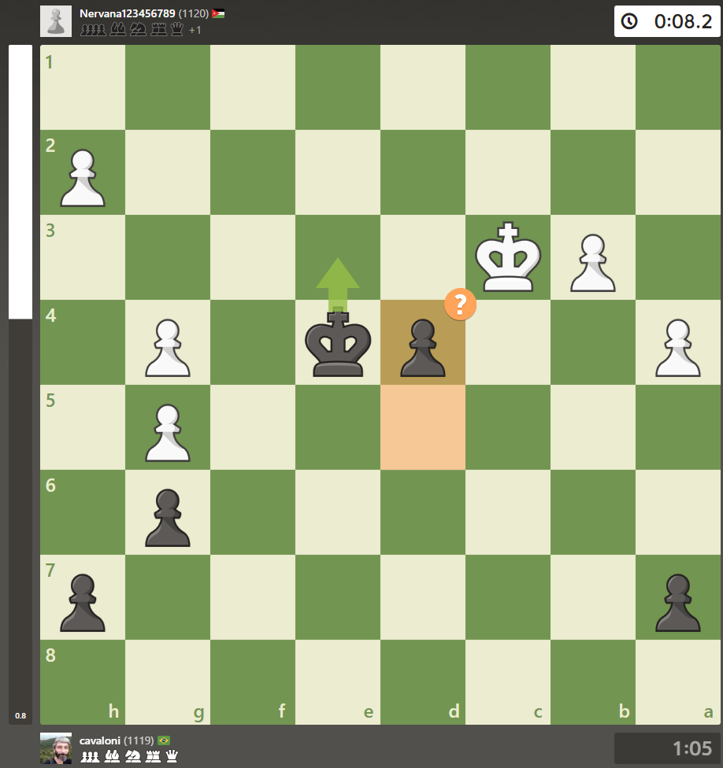
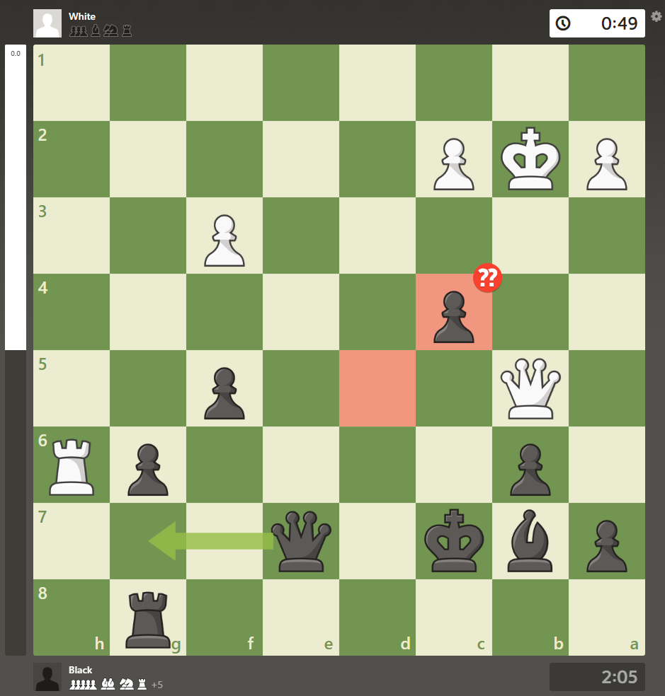
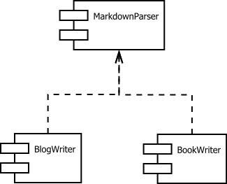
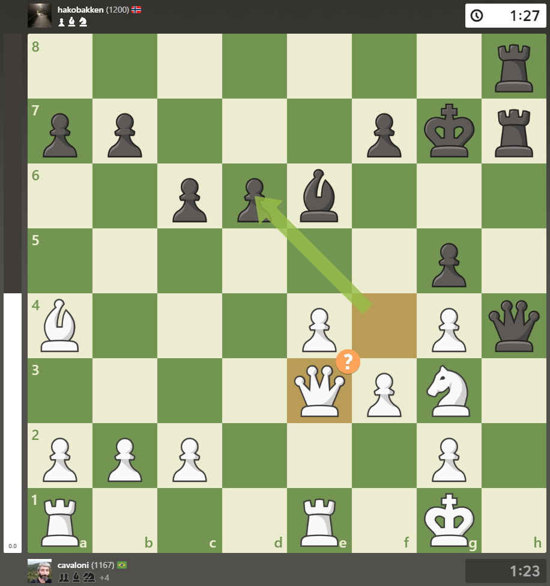

|
 Missing the only good move 2024-12-27 blogging drafts chess > You moved quickly, missing the only good move. 1. e4 e5 2. Nf3 Nc6 3. d4 exd4 4. Nxd4 d6 5. Nxc6 bxc6 6. Bc4 Nf6 7. O-O Be7 8. Nc3 Be6 9. Bxe6 fxe6 10. Bg5 O-O 11. f3 Ne8 12. Bxe7 Qxe7 13. Ne2 d5 14. exd5 |
|
 Win a rook through a fork 2024-12-26 blogging drafts chess > You permitted the opponent to win a rook through a fork. 1. d4 Nf6 2. Nc3 g6 3. e4 d6 4. Bg5 c6 5. f4 Bg7 6. h4 Ng8 7. Bc4 f6 8. Qf3 fxg5 9. fxg5 e6 10. O-O-O Ne7 11. Rf1 Rf8 12. Qe2 Rxf1+ 13. Qxf1 d5 14. exd5 cxd5 15. |
|
 Arquitetura do blogue 2024-12-23 drafts computer projects  |
|
 Only One Move 2024-12-19 blogging drafts chess > There was only one good move there for you, but you overlooked it. 1. e4 e5 2. Nf3 Nc6 3. Bc4 h6 4. d4 exd4 5. Nxd4 Nxd4 6. Qxd4 Nf6 7. O-O d6 8. Re1 Be6 9. Nc3 Qe7 10. Bb5+ c6 11. Ba4 g6 12. Be3 Bg7 13. Qd2 O-O 14. Bxh6 Bxh6 |
| HomeMade Muscle: All You Need is a Pull up Bar (Motivational Bodyweight Workout Guide) (Arvanitakis, Anthony) 2024-11-28 drafts body books Mais um livro sobre exercícios de calistenia. Esse é bem melhor que [o anterior]: o autor perdeu a perna, e isso fez toda a diferença, porque ele explica de uma maneira mais apaixonada sobre a arte de moldar o corpo com seu próprio peso, além de explicar de maneira mais sucinta e convincente (apesar de anedótica) alguns conceitos sobre crescimento muscular, nutrição e motivação. O plano de exercícios do livro é muito mais sucinto e autocontido, não exigindo mais do que o que está nele. Alguns vídeos de exemplo estão espalhados pelo livro (como links), mas também há a descrição em texto para os que não querem ou não podem ver Anthony Arvanitakis em ação. |
| Uma dieta além da moda (José Carlos Souto) 2024-11-23 drafts body books Conheci o trabalho de José Carlos Souto através do podcast Tribo Forte. Ouvia alguns episódios enquanto andava de bike e conhecia aos poucos a figura que analisava de forma crítica pesquisas acadêmicas, o que me ajudou a entender sobre diferentes metodologias, análise dos resultados obtidos e o abismo com o que a mídia propagandeava por aí. |
| Anko (Azuki Beans) 2024-11-23 drafts cooking food ## [Receita 1] Fervura: - Lavar os grãos em água fresca, - escorrer a água, - ferver os grãos por 3 minutos em 4x a água, - escorrer os grãos novamente (alguns usam essa água como chá), - cobrir os grãos com água fresca, |
| Experimento Starbucks 2024-11-10 drafts coffee food Colecionei impressões dos cafés vendidos na icônica (e às vezes polêmica) cafeteria que é uma das minhas favoritas quando o assunto é torrar bem o café pra não ter chance de achar imperfeições. Seus rótulos são sempre no mesmo estilo com variações nas sensações terciárias, as que surgem após a queima e estão mais relacionadas à torra em si que ao grão original. |
| What If (Randall Munroe) 2024-09-20 drafts books Estava com esse livro há um bom tempo na prateleira. Essa última viagem foi uma ótima oportunidade para começar a lê-lo. > Your veins are supposed to bring low-oxygen blood back to your lungs to be refilled with oxygen. But in the Death Zone, there’s so little oxygen in the air that your veins lose oxygen to the air instead of gaining it. |
| Software Architecture in Practice (Len Bass, Paul Clements, Rick Kazman) 2024-09-20 drafts computer books Mais um da série de livros para preencher lacunas nos meus conhecimentos técnicos. Seguem recortes iniciais. > Module structures partition systems into implementation units, which in this book we call modules. |
| Informação não é conhecimento 2024-09-20 drafts essays philosophy A informação do meu blogue não me serve de nada a não ser como reafirmação do conhecimento interno que mantenho. Essa minha máquina de estados única e exclusiva da minha linha de vida. Talvez algo sirva para alguém em algum momento, mas nunca será a essência do que procuro. O conhecimento em si se separa da informação quando este se transforma em um processo internalizado do ser. Um algoritmo. É este algoritmo a parte mais importante do uso da informação. |
| Como degustar bebidas complexas 2024-09-20 drafts wine coffee food Minhas últimas experiências tomando café no Japão junto da leitura de anotações antigas me levaram a concluir formas inteligentes de degustar bebidas que podem não ser do seu agrado. Em especial o café ruim ou forte demais geralmente é disfarçado colocando açúcar. Não faça isso. Irá aumentar demais a acidez da bebida e fará mal ao estômago. |
| The Algorithm Design Manual (Steven S. Skiena) 2024-09-14 drafts computer books Acordei no meio da noite pensando em como remover um elemento de uma árvore, aí eu desisti de criar minha própria solução. Baixei The Algorithm Design Manual e Cormen para aprender. Um lapso temporário. |
| Chess analysis drafts chess Analisando brevemente o que foi aprendido ou reforçado em algumas partidas, mas, principalmente, os erros que levaram à derrota. - 2024-11-24 É bom ameaçar peça com peão para em seguida dar garfo. |